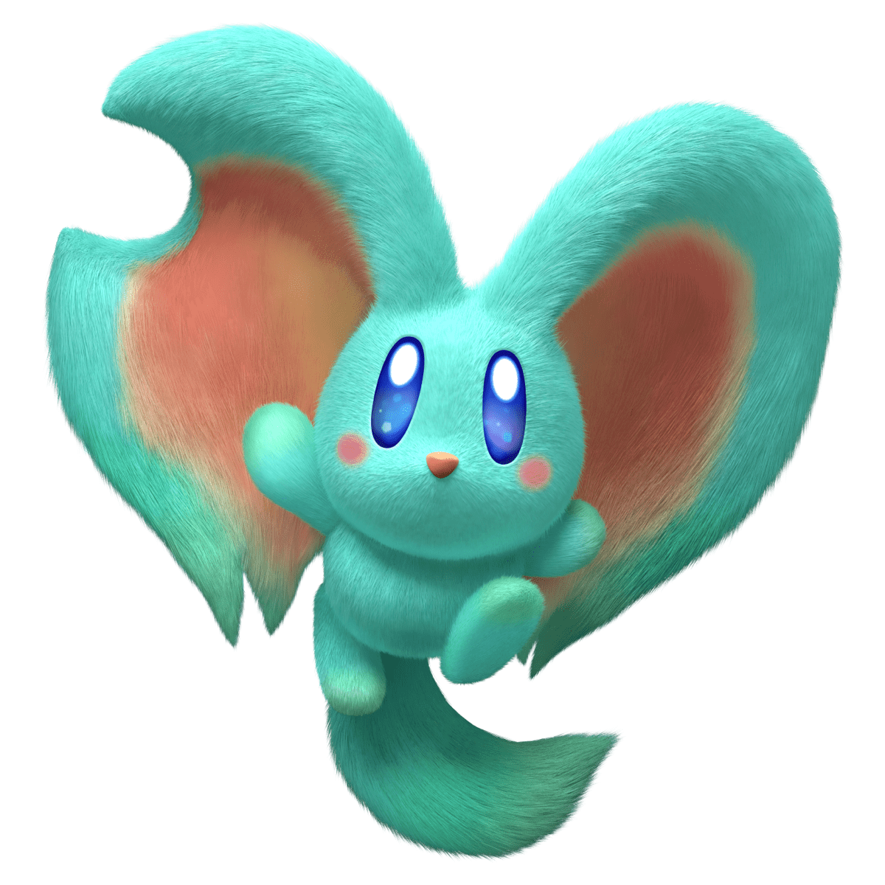

CHARACTERS
Kirby

Sebuah puffball merah muda dan kuat, Kirby memiliki kemampuan untuk menghirup dan menyalin kemampuan musuh! Kirby tiba-tiba tersedot ke "Tanah Terlupakan" yang misterius dan tidak dikenal. Dia adalah karakter utama yang dapat dimainkan dan protagonis dari permainan.
Elfilin
Makhluk terbang misterius ini diselamatkan oleh Kirby dan membantunya menyelamatkan Waddle Dees yang ditangkap. Elfilin adalah sahabat karib Kirby dalam petualangan baru yang akan dia jalani. Namun, mungkin ada yang lebih dari penampilannya yang menggemaskan.
Bandana Waddle Dee

Teman bertarung Kirby, Bandana Waddle Dee, bergabung dalam petualangan Anda melalui tanah baru yang aneh sebagai Pemain 2 saat bermain dalam mode co-op 2 pemain.
The Beast Pack

Penghuni Tanah Terlupakan yang ganas ini telah menahan Waddle Dees. Kalahkan Beast Pack untuk menyelamatkan Waddle Dees dan temukan pemimpin mereka untuk membawa perdamaian ke dunia ini.